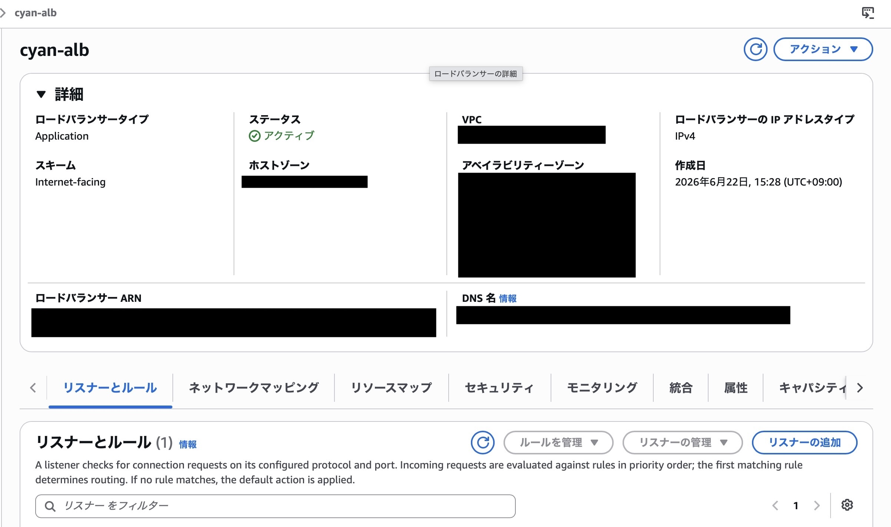
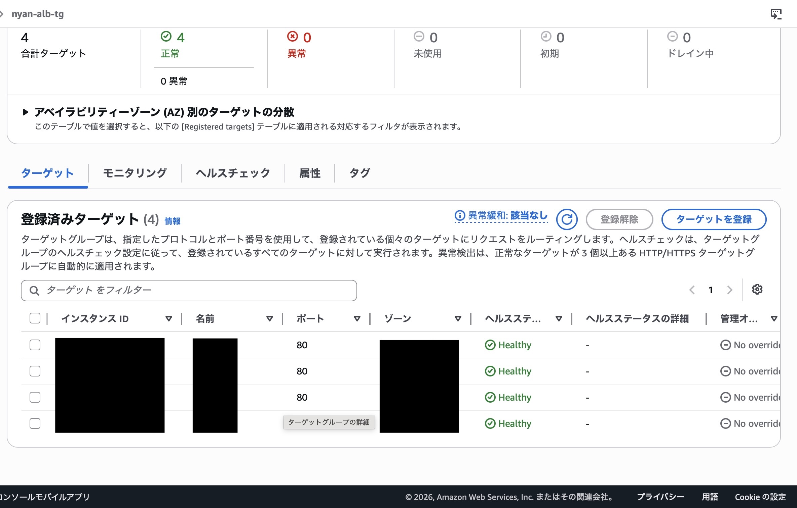
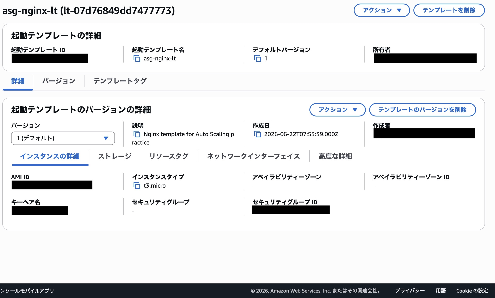
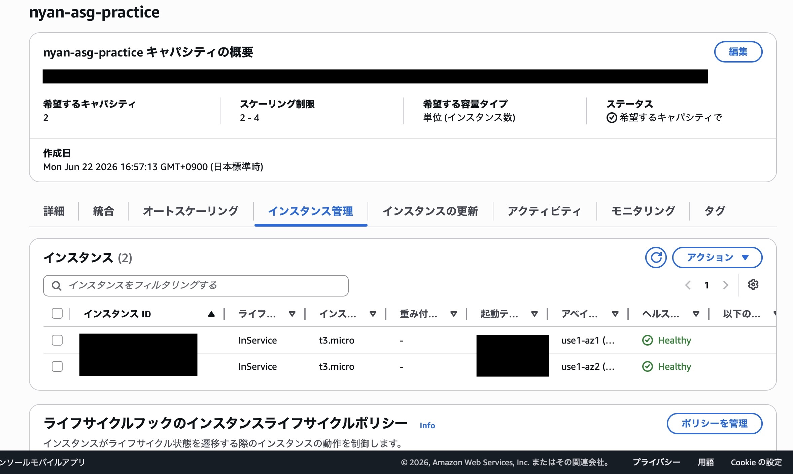

AWS High Availability Lab
本番環境とは別に学習用AWS環境を構築し、 Application Load BalancerとAuto Scaling Groupを用いた 高可用性構成と自己修復の仕組みを検証しました。
ALB / Auto Scaling / Multi-AZ / Self HealingArchitecture
Internet
↓
Application Load Balancer
↓
Auto Scaling Group
↙ ↘
EC2 (AZ1) EC2 (AZ2)
1. Application Load Balancer
Internet-facingのApplication Load Balancerを構築し、 外部からのHTTPリクエストを受け付ける入口を作成しました。

HTTP:80のListenerを設定し、受信したリクエストをTarget Groupへ転送する構成を確認しました。
この構成により、利用者はバックエンドのEC2を直接意識せず、ALB経由でサービスへアクセスできます。
2. Target Group / Health Check
Target GroupにEC2インスタンスを登録し、 Health Checkによって正常なインスタンスへルーティングされることを確認しました。

登録済みターゲットがHealthy状態になっていることを確認し、ALBから正常に振り分けられる状態にしました。
Health Checkに失敗したインスタンスは転送対象から外れるため、障害時にも正常なEC2へリクエストを流せます。
3. Launch Template
Auto Scaling Groupで利用するために、 AMI・インスタンスタイプ・キーペア・Security Groupなどの起動設定をLaunch Templateとして定義しました。

Launch Templateにより、同じ構成のEC2インスタンスを自動生成できるようにしました。
個別のサーバーを手作業で復旧するのではなく、テンプレートから再作成するクラウドらしい運用を検証しました。
4. Auto Scaling Group
Desired Capacityを2台、Minimum Capacityを2台、Maximum Capacityを4台に設定し、 常に2台以上のEC2を維持する構成を作成しました。

2台のEC2がInService / Healthyの状態で管理されていることを確認しました。
複数のAvailability Zoneに分散することで、単一インスタンス障害に強い構成を検証しました。
Self Healing Test
EC2インスタンスを1台Terminateし、障害発生を想定した検証を行いました。
Terminate後、Auto Scaling GroupがDesired Capacityを維持するため、 数十秒後に新しいEC2インスタンスを自動生成することを確認しました。
この検証を通して、障害発生時にサーバーを手作業で修復するのではなく、 設計図から自動的に再作成するSelf Healingの考え方を学びました。
What I Learned
- ALBは複数EC2へアクセスを分散できる
- Health Checkにより異常なEC2を自動的に切り離せる
- ASGは必要な台数を維持するため、自動でEC2を作成する
- クラウドでは「壊れたサーバーを直す」より「設計図から再作成する」考え方が重要
Troubleshooting
- ALBのSecurity Group設定不足によりアクセス不可を経験
- Target GroupがUnused / Unhealthyになる問題を確認
- 503エラー発生時にSecurity Group・Target Group・Health Checkを切り分けて解決